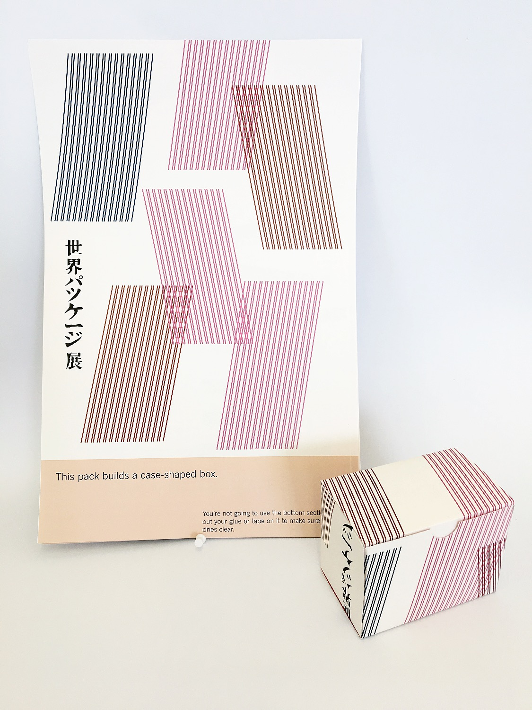

Fifty Boxes
Fold, Stick, Stuff, Give
Foldable flat-packed boxes for easy, beautiful gift-giving
After creating 50 variations of a classic poster by Isao Arimoto for the World Packaging Exhibition in Tokyo, I used these designs to create sustainable and beautiful flat packaging for gifts or general use. In each pack you woudl recieve 50 uniquely designed boxes in 4 different shapes - trapezoid, prism, case and envelope. Made from sustainable, recycled materials, each DIY pack comes with simple instructions on how to cut, stick, pack and give.
